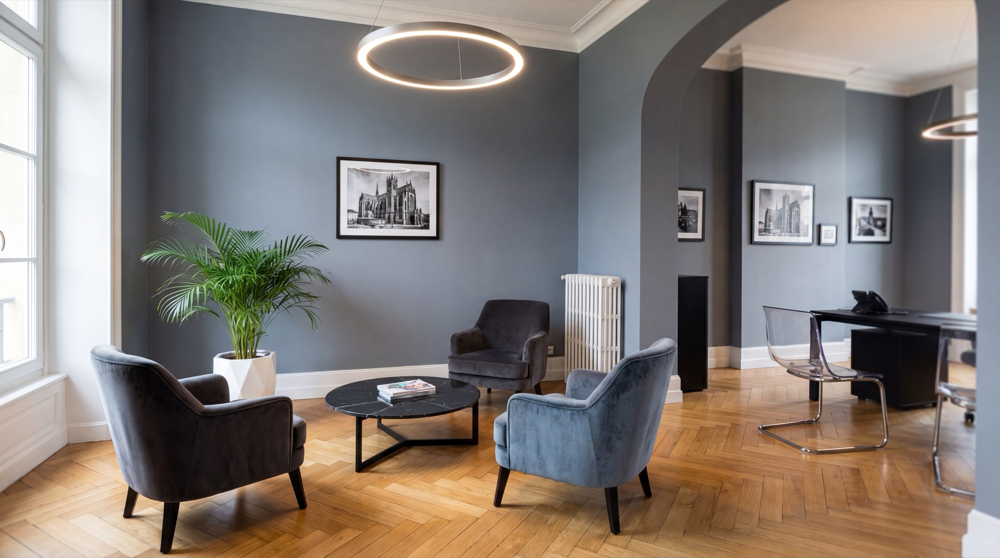
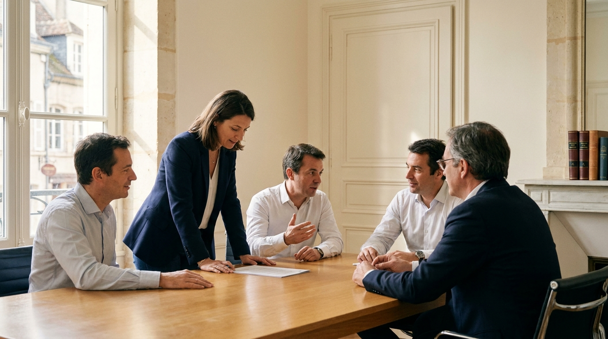
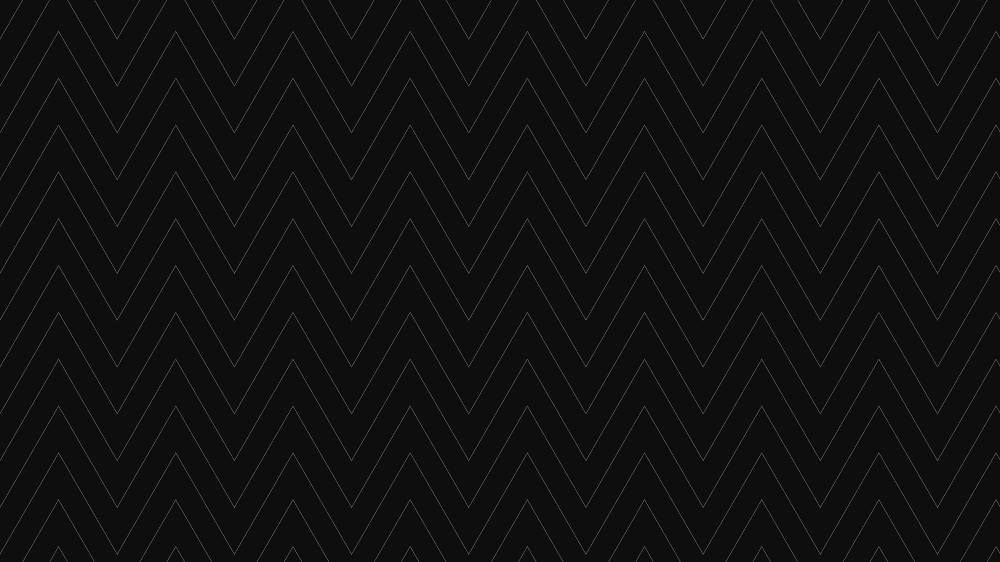
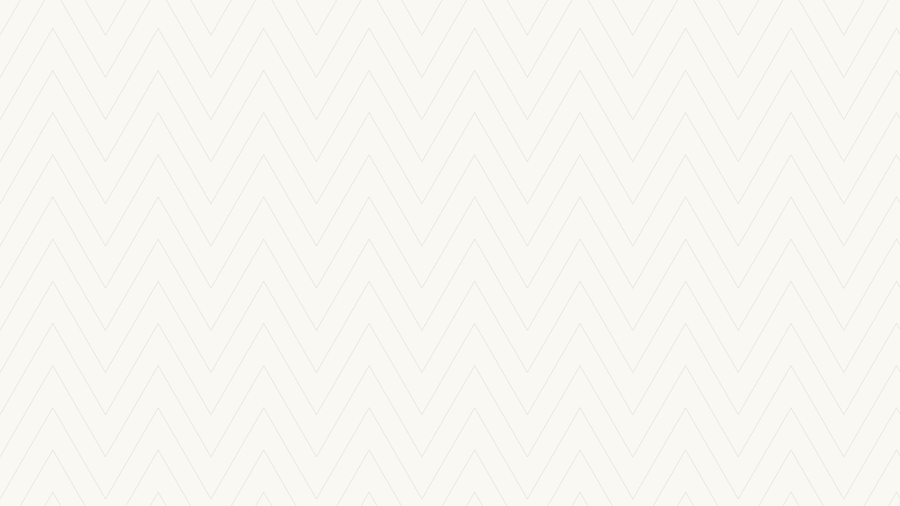
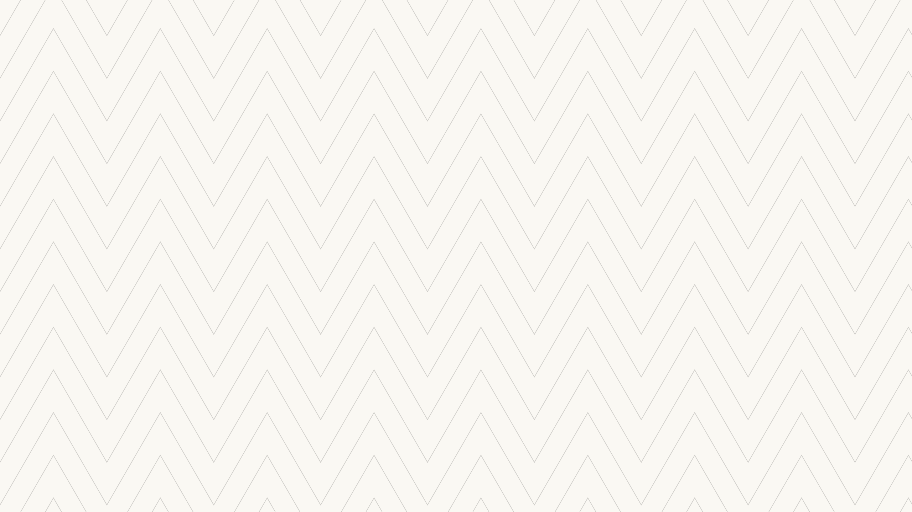

Une marque ne se crie pas, elle se tient. Tout MP Finance tient dans une seule typographie, une photographie sobre et la justesse des espaces. Un système, pas une décoration.

L’accompagnement, d’abord · l’humain au centreUn partenaire qui s’engage, pas un guichet qui oriente.
Chaque dossier est traité avec la même rigueur, de la première acquisition à la stratégie patrimoniale.
Un réseau de courtiers indépendants qui défendent l’intérêt du client, et restent son interlocuteur dans la durée.
Un système noir & blanc, une typographie, beaucoup de vide. La couleur, seule la photographie l’apporte.
Le ton se tient sur deux appuis : d’abord chaleureux et humain, toujours porté par une élégance institutionnelle.
On parle à une personne, pas à un dossier. Proximité, clarté, écoute : la voix de quelqu’un qui vous accompagne vraiment.
La rigueur d’un cabinet patrimonial : sobriété, précision, sérieux. Jamais froid, jamais distant.


Lockup principal · version inversée (fond foncé / photo) 02.1 · Le logoEntité grand public. Tagline orientée accompagnement : crédit immobilier, rachat, assurance, gestion de patrimoine.
Même logo, même filet. Seules la mention « Pro » et la tagline changent. Une marque, deux adresses.
| Token | HEX | RGB | Print (K) | Usage |
|---|---|---|---|---|
| ink | #0E0E0E | 14 · 14 · 14 | K 100 | Texte, aplats, logo. Aplat large : rich black 60/40/40/100. |
| ink-soft | #2A2A28 | 42 · 42 · 40 | K 90 | Corps de texte long, chapôs. |
| gray-700 | #4A4A47 | 74 · 74 · 71 | K 78 | Texte secondaire, sous-titres. |
| gray-600 | #5E5E5A | 94 · 94 · 90 | K 66 | Texte tertiaire, intertitres discrets. |
| gray-500 | #7C7C77 | 124 · 124 · 119 | K 58 | Méta, légendes (grand corps). |
| gray-400 | #9B9B95 | 155 · 155 · 149 | K 45 | Labels discrets, états désactivés. |
| gray-300 | #C7C4BC | 199 · 196 · 188 | K 28 | Séparateurs marqués. |
| gray-200 | #E3E0D8 | 227 · 224 · 216 | K 14 | Filets, bordures fines. |
| gray-100 | #EEEBE3 | 238 · 235 · 227 | K 8 | Fonds alternés, cartouches. |
| paper | #FAF8F3 | 250 · 248 · 243 | stock | Fond par défaut (blanc cassé chaud). |
| white | #FFFFFF | 255 · 255 · 255 | K 0 | Surfaces surélevées, cartes. |
12 colonnes en print A4 et desktop, 6 en tablette, 1 en mobile. On compose sur 1, 2, 3 ou 6 colonnes, jamais au hasard.
La marge latérale vaut au moins une colonne. Le contenu respire ; rien ne touche le bord.
Interlignes et espacements sont des multiples de 8 px. Tout s’aligne sur une grille verticale invisible.
Photographies : réelles uniquement — jamais de visages générés. Format paysage pour les bureaux et l’agence ; les portraits seront réalisés au shooting de l’AG de septembre. Couleur naturelle, lumière douce, vrais collaborateurs, tons justes. Matière : la marque n’a qu’une seule matière — le fond signature pointe de Hongrie (section 09). Elle remplace toute autre texture ; aucun autre motif ni grain de fond n’est employé.
On explique, on déjargonise, on rend lisible.
On parle à une personne. On signe avec des noms. On invite à l’échange.
On reconnaît la difficulté avant de guider. Rien n’est une fatalité.
Rigueur et nuance. On ne survend pas.
Votre projet mérite mieux. Un seul interlocuteur, du début à la fin.
« Un partenaire, pas un guichet. »
« Votre projet mérite mieux. »
« On s’occupe du financement. Vous, du projet. »
« Une séparation bouleverse beaucoup de choses. Pourtant, ce n’est pas une fatalité pour votre projet. »
Tournures repères : « à condition de » · « selon les établissements » · « Parlons-en. »
« Parlons de votre projet, on s’occupe du reste. »
« Un seul interlocuteur, du premier rendez-vous à la signature. »
« On négocie pour vous auprès de 30 banques. »
« On vous explique chaque ligne, sans jargon. »
« Votre dossier avance — on vous tient au courant. »
« Un premier rendez-vous, sans engagement. »
« La solution n°1 incontournable du marché. »
« Profitez vite de nos offres exceptionnelles ! »
« Optimisation de votre stratégie de financement multi-canal. »
« Le meilleur taux, garanti. »
« Dépêchez-vous, l’offre expire ce soir. »
« Nos experts disruptent le courtage. »
Les termes techniques (TAEG, hypothèque, assurance emprunteur…) ne sont pas interdits — on les explique, jamais on ne les jette bruts.
Quel que soit le registre, une seule question : est-ce que ça aide vraiment quelqu’un, sans esbroufe ?
Couverture photographique pleine page, double-page éditoriale aérée. En-tête courant, folio et mentions légales. Prête à imprimer.
Chaque dossier est unique. Nous négocions auprès de l’ensemble de nos banques partenaires et restons votre seul interlocuteur, du premier rendez-vous à la signature, et bien après.
« On s’occupe du financement. Vous, du projet. »
Trois vues carrées 1080 : accroche, preuve, invitation. Système noir & blanc ; la couleur, seule la photo l’apporte.
Sobre, une seule graisse, un filet. Aucun visuel superflu.

C’est le sol même des bureaux MP Finance. Un signe authentique, pas un motif de banque d’images.
Une trame que nul concurrent ne porte : le chevron devient un marqueur de marque immédiat.
Un trait fin, une présence feutrée : le motif soutient le propos sans jamais voler la vedette au logo.
Déclinable à l’infini, du grand format au détail print — 100 % noir & blanc, fidèle à la charte.

Couvertures, ouvertures de section, fonds de citation, papeterie. Jamais sous un long texte courant.
Toujours en noir & blanc, opacité 10 %. Version encre pour les aplats sombres ; version claire sur le papier — présente, sans dominer le logo.
Par petites touches. La trame soutient le propos, elle ne le couvre pas : le vide reste la règle, le motif l’exception.
Le réglage arrêté avec la dirigeante (15/06) : le filigrane le plus discret, présent sans charger la page. Couvertures claires, encarts, papeterie.
Le pendant sombre, même discrétion : la trame en clair sur encre pour les couvertures sombres et les fonds de citation.

Réservé aux très grands aplats où le 10 % disparaîtrait à distance (kakémonos, fonds de scène). Jamais sur les supports courants.
Grille 24 × 24, marge optique 2 px. Trait 1,5 px, terminaisons et jonctions arrondies. Géométrie simple, lisible en petit.
Noir & blanc uniquement — encre sur clair, blanc sur encre. La couleur n’entre jamais dans une icône : elle reste à la photo.
Une icône appuie une idée, elle ne décore pas. Jamais de picto plein, jamais deux styles mélangés, jamais sous un titre fort.
favicon.ico (16·32·48) · favicon.svg (vectoriel) · apple-touch-icon.png (180) · icon-192.png & icon-512.png (Android / manifest PWA).
Fond encre plein, monogramme blanc centré occupant ~60 % du carré. Coins vifs pour le favicon, arrondis ~22 % pour l’app icon (recommandation iOS/Android).
Logo complet « MP Finance » illisible en 16 px, fond transparent, monogramme qui touche les bords, dégradé ou couleur. Toujours le même contraste blanc/encre.